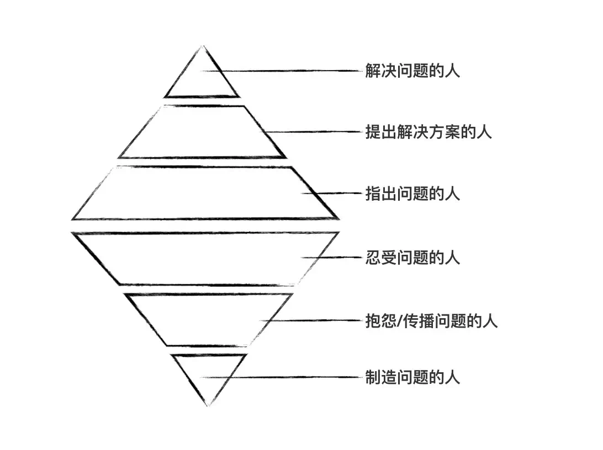

Mainium
昧因
- 基因 DNA
- 模因 MEME
- 技因 TEME
如何将生活与社区融合?
210425 1942

用了20年, 终于可以自称:
昧因
首席的…
怎么来的?
1998 江苏石油化工学院
自学->Think in JAVA
1999, 常州利诚通讯
Flash ->
2000, 上海讯博数码科技
ASP ->
2001
Blogging
2002~07
Plone 1.0
2003~
2004 ~ SINA.com
FreeBSD
2005 ~ 08
47期会课
2007 ~ 2009
BPUG…
2007 ~ 金山
珠三角技术沙龙 2009 ~
ZPUG ->
2010 新加坡
2011 ~ PyConChina
自己的 conference
2012~13 49期讲座
2013 ~
GCP … G+
2014
主题+闪电
但行好事, 莫问前程
程序媛专场主持
Mr. 大妈
2015~18
有偿
170401 ~ 小密圈…
知识付费
181225 ~ 蟒营™课程
服务大众
自筑社群
190214 ~
AI 落地
本分
过程改进
用技术改善技术人生活品质
爱好
22CC
GNU 感召
社区群落 ~> 领域流量
DebugUself
有心无心,自然聚集
OpenSource
应该学习什么?
学习是门手艺…
新学科
才能学通
IT 技术
私人偏见
网络资源
会自学
–> 汉语
无人能挡
THE MAIN ELEMENT TO ANTI-MEME FOR UPGRADE TEME.
如何是会编程?
“For the things we have to learn before we can do them, we learn by doing them.”
“我们通过做来学习
我们必须学习去做的…”
~ 伦理学
灵魂三问
相对四固
Why not?
靠什么?
兴趣和内在动机才是长期坚持的动力
--- Σωκράτης (Socrates)社区长久发展动力…
一切根源
谁主张谁执行
技术社区
默认态度

托词…

本心为尚
好好过好此生
很重要
认识世界
自己真实形状…
就是最自在的一种自我认识
至刚易折,上善若水

2012.2.17 ~
~~> 496期
life style
假如没有私人生活怎么办?
三毛:导向自由的律令

Kaopulity
总之
初心…
blog.101.camp/NC/190711-NC101-self-destructionaskdama@googlegroups.com
即是生活
NOT PPT
捧哏：假如没有私人生活怎么办？
开源课程框架
教学反转训练营
框架志趣
三有任务序列…
自学习型社区
多赢
伴你重享自学乐趣
Reactivate Joy by Self-teach with You


sociallearnlab.org
社区顾问